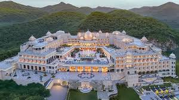

Udaipur: The White City of Eternal Romance
Rising like a mirage from the shimmering waters of Lake Pichola, Udaipur is a city of unparalleled grace and ivory-white architecture. Surrounded by the ancient Aravalli Hills, it serves as a serene sanctuary from the bustling desert cities of Rajasthan. Founded in 1553 by Maharana Udai Singh II, Udaipur was designed to be an impregnable fortress of beauty centered around a series of man-made lakes that cool the desert air and reflect the city’s glowing palaces.
The heart of the city is the City Palace, a massive complex of granite and marble that stands as the largest of its kind in Rajasthan. Here, the history of the Mewar rulers—who never fully surrendered to the Mughal Empire—is etched into every silver door and mirrored mosaic.
From the “floating” palaces that appear to drift on the water to the narrow winding streets filled with artisan workshops, Udaipur is a place where royal heritage is not just a memory but a living tradition. Every traveler who walks along its lakeside ghats discovers a city where romance, history, and culture exist in perfect harmony.

🏛️ The City Palace: A Living Monument
History: The City Palace served as the administrative and symbolic heart of the Mewar Kingdom. Built gradually over more than 400 years, different Maharanas added new wings, creating a beautiful blend of Rajasthani and Mughal architectural styles.
Environment: The palace is a sprawling complex of towers, balconies, and courtyards overlooking Lake Pichola. The famous Mor Chowk (Peacock Square) features three stunning glass-mosaic peacocks symbolizing the seasons of summer, monsoon, and winter.
Culture: While a private wing still houses the royal family, the rest of the palace functions as a museum displaying royal armor, crystal galleries, and traditional Mewar paintings.
🏝️ The Island Palaces: Jag Niwas & Jag Mandir
History: Jag Niwas, now known as the Taj Lake Palace, was built in 1743 as a summer retreat for the royal family. Jag Mandir is older and famously served as a refuge for Mughal Prince Khurram, later Emperor Shah Jahan, who is believed to have drawn inspiration here for the Taj Mahal.
Environment: These palaces are unique water-locked environments situated in the middle of Lake Pichola. Visitors reach them by boat, enjoying a stunning 360-degree view of Udaipur’s skyline and surrounding hills.
Culture: Today these island palaces represent the height of Rajasthani luxury and hospitality. They are often used for high-profile weddings and film productions, including scenes from the James Bond film “Octopussy.”
🌿 Saheliyon-ki-Bari: The Garden of Maidens
History: Built by Maharana Sangram Singh for his queen and her 48 bridesmaids, this garden was designed as a peaceful retreat where royal ladies could walk and relax away from the formal life of the court.
Environment: The garden is a lush oasis filled with lotus pools, marble elephants, and beautifully designed fountains that function using natural water pressure without mechanical pumps.
Culture: Saheliyon-ki-Bari reflects the refined and peaceful side of Rajputana life, emphasizing nature, water, and leisure in a region known for its desert climate.
🍛 The Flavors of Mewar
Udaipur’s cuisine represents a refined version of traditional Rajasthani cooking. It blends royal cooking techniques with seasonal desert ingredients.
Mewari Ker Sangri: A traditional desert dish made from dried berries (Ker) and beans (Sangri) found in the scrublands of Rajasthan.
Kulhad Coffee/Tea at Fatehsagar: A beloved modern tradition where locals gather at Fatehsagar Lake to drink thick frothy coffee or masala chai served in clay cups called Kulhads.
Dil Khushal (Mohanthal): A rich sweet made from roasted gram flour, ghee, and sugar, topped with sliced almonds.
Safed Maas: Udaipur’s famous white mutton curry cooked with yogurt, cashews, poppy seeds, and mild white spices.
Gatte ki Sabzi: Gram flour dumplings simmered in a tangy yogurt-based gravy.